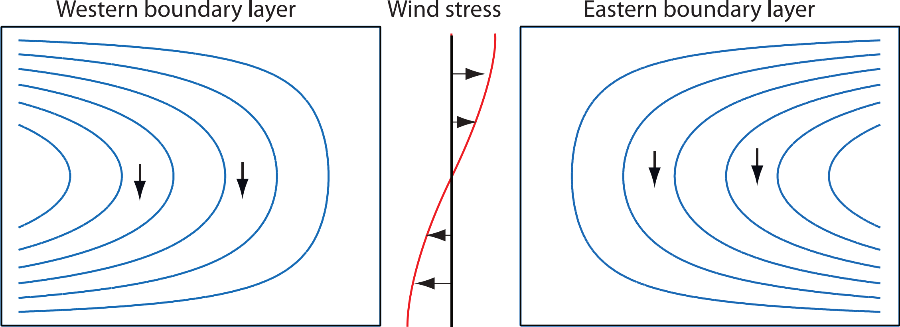

The dynamics is most clearly illustrated if we now restrict our attention to a wind-stress curl that is zonally uniform, and that vanishes at two latitudes $y = 0$ and $y = 1$. An example is $$ \tau_T^y = 0, \qquad \tau_T^x = -\cos(\pi y) $$ for which $\text{curl}_z \boldsymbol{\tau}_T = -\pi \sin(\pi y)$. The Sverdrup (interior) flow may then be written as $$ \psi_I(x,y) = [x - \underbrace{C(y)}_{\text{arbitrary function of integration}}] \, \text{curl}_z \boldsymbol{\tau}_T = \pi [\underbrace{C(y)}_{=-g(y)/\text{curl}_z \boldsymbol{\tau}} - x] \sin \pi y $$

Two possible Sverdrup flows, $\psi_I$, for the wind stress shown in the centre. Each solution satisfies the no-flow condition at either the eastern or western boundary, and a boundary layer is therefore required at the other boundary. Both flows have the same, equatorward, meridional flow in the interior. Only the flow with the western boundary current is physically realizable, however, because only then can friction produce a curl that opposes that of the wind stress, so allowing the flow to equilibrate.
Regardless of our choice of $C$, we cannot satisfy $\psi = 0$ at both zonal boundaries. We must choose one and construct a boundary layer solution to determine $\phi$ for the other. On intuitive grounds, we choose the solution with $\psi = 0$ at $x = 1$, since the interior flow then aligns with the wind: the wind supplies a clockwise torque, and friction must balance it with anticlockwise angular momentum. This balance can be provided by friction in a western boundary layer if the interior flow is clockwise, but not by an eastern boundary layer when it is anticlockwise. The argument does not depend on the sign of wind-stress curl—reversing the wind still implies a western boundary layer is needed.
1Vallis, G.K. (2017) Atmospheric and Oceanic Fluid Dynamics: Fundamentals and Large-Scale Circulation. 2nd edn. Cambridge: Cambridge University Press.